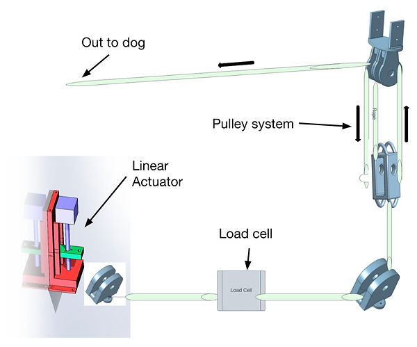
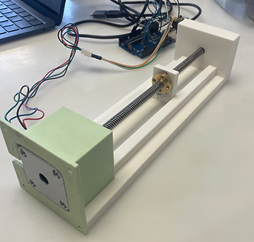
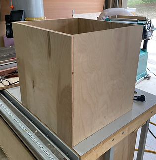
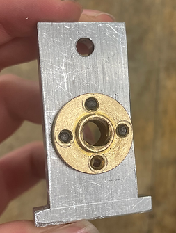
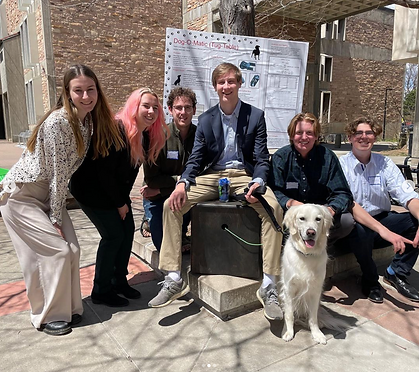

Tug Table
The Tug Table is an automated tug-of-war machine for dogs, developed in my first-year Engineering Projects course. Our six-person team designed the toy for people with limited time, mobility, or space to provide their dogs with exercise and mental stimulation.

Design
The primary design challenge was developing a device that could withstand and pull against a medium-sized, 30-pound dog. We selected a linear actuator to meet this goal within our time and budget constraints. Affordable, high-force actuators offered limited travel, so we incorporated a pulley system to increase the rope travel available to the dog. This increased travel also increased the force required from the actuator.
My Role
My primary responsibility was the linear-actuator system. During concept selection, the team chose the linear-actuator approach I proposed. I researched and purchased an actuator that met our requirements and constraints.
I designed a SOLIDWORKS housing to secure the actuator inside the enclosure and support a slide mounted to the threaded nut. The 3D-printed housing was designed to resist motor torque and allow straightforward disassembly for access to the motor.
I machined an aluminum slide on a mill to prevent the nut from rotating, producing linear motion. The slide also provided the attachment point for the rope.
I was also responsible for the external enclosure. I constructed it from 3/4-inch finish-grade plywood using a table saw, router, and nail gun, then sanded and finished the assembly.




Results
Get to Know Us
The prototype required further development for its intended application but successfully demonstrated the mechanism and pulled 10 pounds. Scaling the design for use with a dog would require a stronger or longer actuator. A longer actuator would reduce the travel multiplication required from the pulley system. The prototype operated at the final design expo and received the best-of-class-section award.